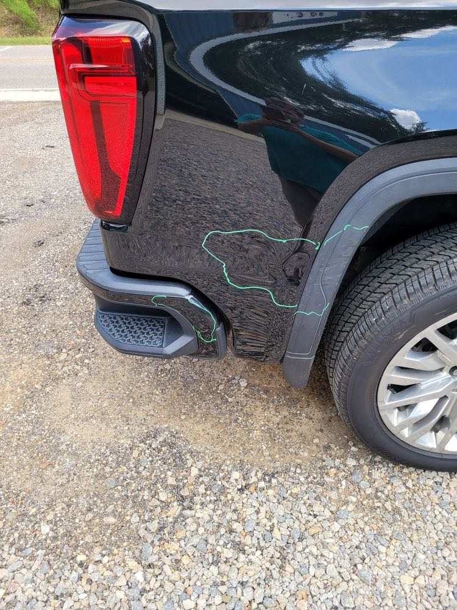
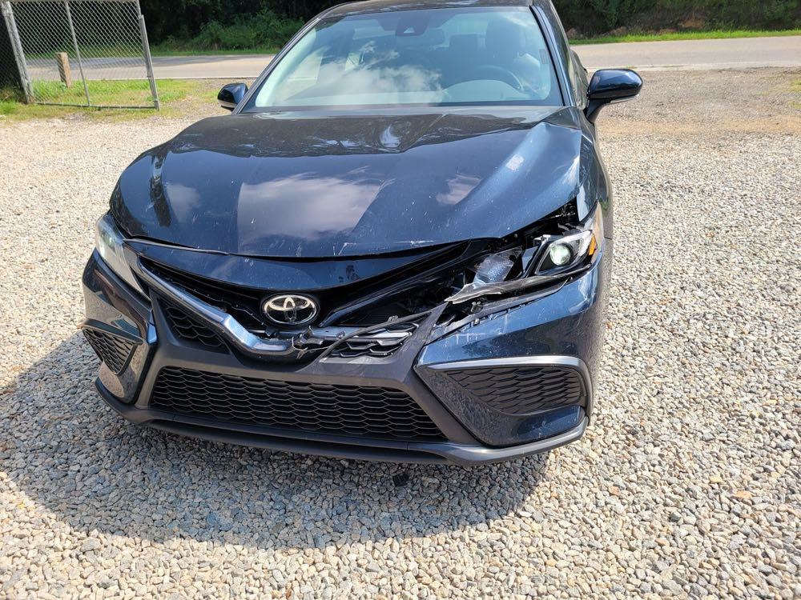

01
The estimate.
Call or stop in Monday to Thursday, 7:30 AM to 5 PM, and show Shorty the damage. The dents and scrapes get outlined in green marker so everyone sees the same thing. If there is an insurance claim, bring the details: Shorty’s works with the insurance company on the repair.
Customer-supplied parts are not installed. Ask about aftermarket parts if cost is a worry: one customer says the owner offered to look them up to bring the price down.

